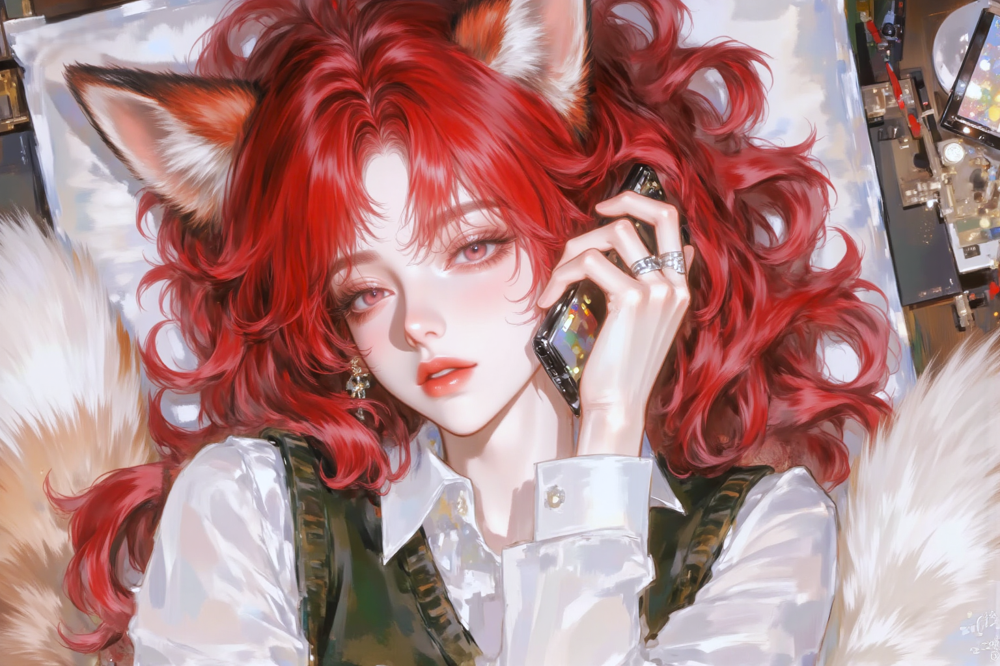
Tipsy AI Beginner Guides
For Mobile App Version
(A helpful guide with everything you need to get started）
1. Tipsy App Overview
Features ＆ Navigation
When you first enter our homepage, you’ll find five buttons at the bottom that will take you to different sections of the app.
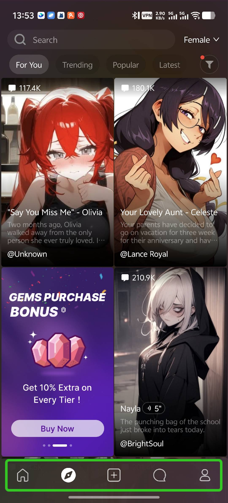
- Home Page 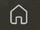
- On the home screen, you’ll find two features: Showcase and Reels.
- You can watch character videos here. If you like any of the characters, simply tap the “Let Your Story Begin” button to start chatting with them directly.
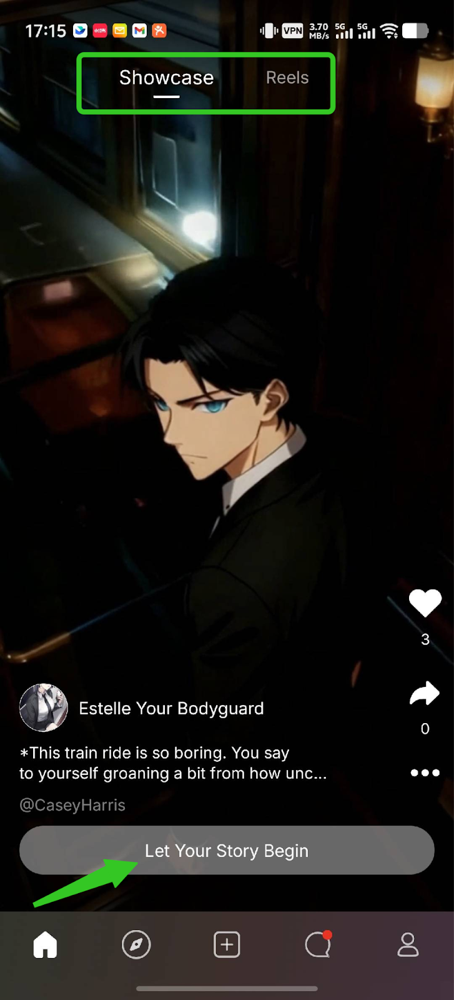
- Character Discovery 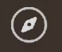
- Here, you can explore all characters created by our creators and users. Browse through Search, For You, Trending, Popular, and Latest to find your favorite character and start chatting.
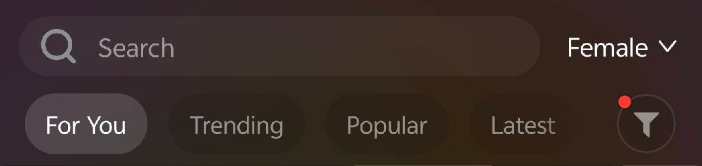
- Create ＆ Publish Your Character

- By clicking here, you can create or publish your character, or build a story with multiple characters.
- For advance creation guide you can visit our:
Creator's guide | Tutorials about AI chatbots creation from Tipsy Chat
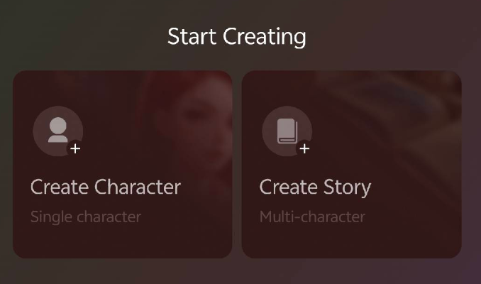
- Time Corridor 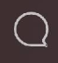
- This page shows your recent chats and interactions, organized by time.
- You can quickly find characters you chatted with today or earlier and tap any card to jump straight back into the conversation.
- Switch between List View and Card View using the two buttons at the top right.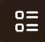

- From here, you can tap the bell icon to view your notifications.

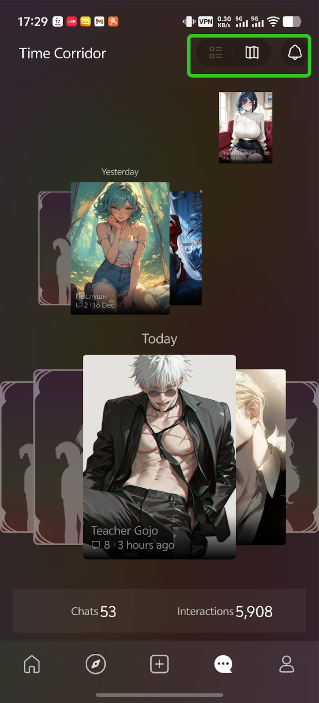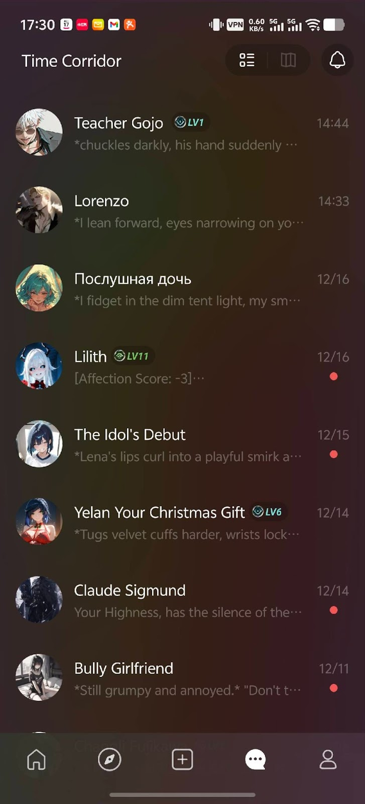
- Profile Page
- Here, you can edit your profile bio, avatar, and background wallpaper.
- View your Characters, Memories, Role Cards, Favorites, Likes, and Reels you’ve created.
- You can also check your balances for Tipsy’s three currencies: Gems, Blue Gems, and Coins.
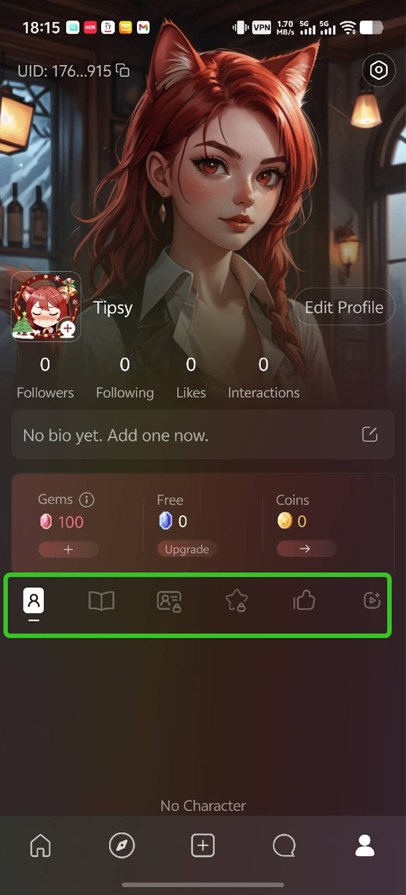
2. How To Redeem Your Invitation Code
- Go to your profile page.
- Click “+” on Red Gems.
- Find the first mission under "Starter" on this page, where you can enter your invitation code.
- Make sure to enter it before the time limit—each account can only use one code.

3. About Gems
How Gems Work in Tipsy
In Tipsy, Gems are used throughout the app. Both are visible on your profile page.
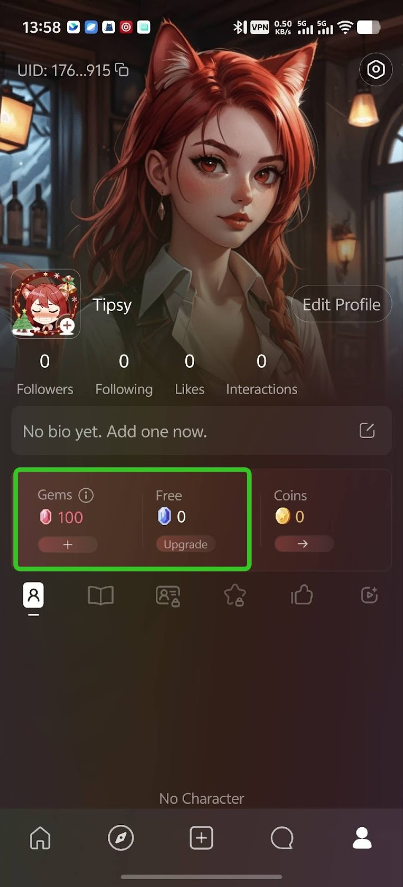
The image above shows two types of Gems: Red Gems and Blue Gems.
They work the same way, but differ in how you get them and how long they last.
- Red Gems never expire and can be earned or purchased.
- Blue Gems are exclusive to subscribers and refresh monthly based on your subscription plan.
Both Gems can be used across Tipsy wherever Gems are required.
When spending Gems, Blue Gems are deducted first, followed by Red Gems.
How to Gain Red Gems
In Tipsy AI, there are four ways to get Red Gems: you can earn them through missions, daily check-ins, and events, or purchase them with cash.
- Buy in the Gems store
You can buy Gems directly from our Gem store.
PS: New users receive a 10% bonus on their first purchase per each tier, along with a special New User Deal gem pack.
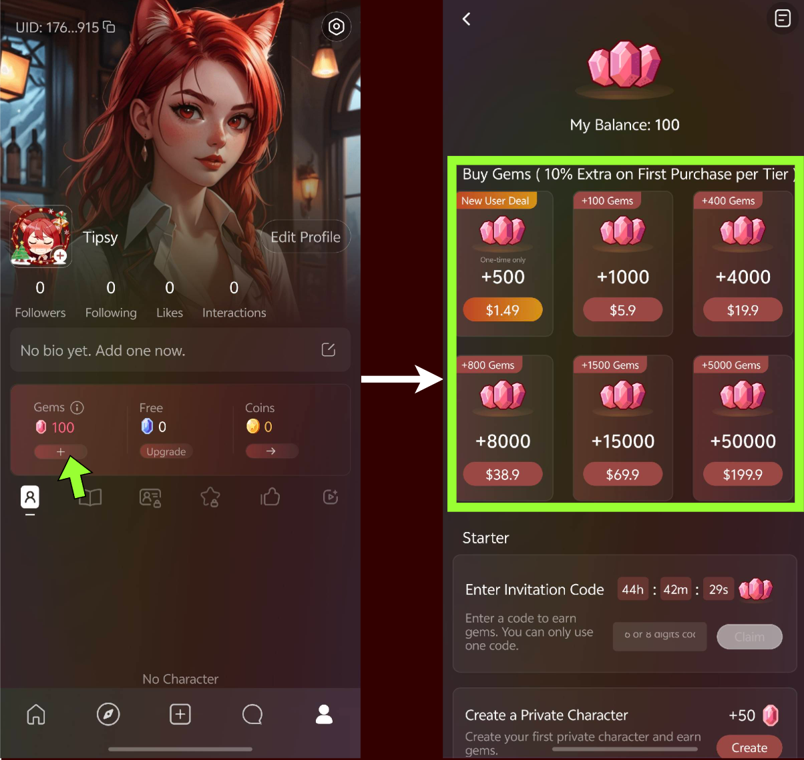
- Missions and Daily Check-ins
Earn Red Gems by completing missions and checking in daily.
- Starter Missions, Bonus Missions, and other One-time Missions give you Gems once upon completion.
- Daily Tasks refresh every day, allowing you to earn Gems daily.
- You can find our missions here👇:

- Exchange Tipsy Coins
- Tipsy Coins are a virtual currency that rewards creators/users.
- You earn 3% of the Gems spent by others on your characters or multi-character stories, paid in Coins.
- Coins can be exchanged for Red Gems at a 1:1 ratio.
- Please refer to the Coin page for more details and rules.

- Join events and giveaways
- Check your Notification Inbox or our Discord server for events like weekly giveaways, creator events, and more.
- By participating, you have a chance to earn large amounts of Gems and Membership rewards.
Tipsy Discord Server: Tipsy Discord
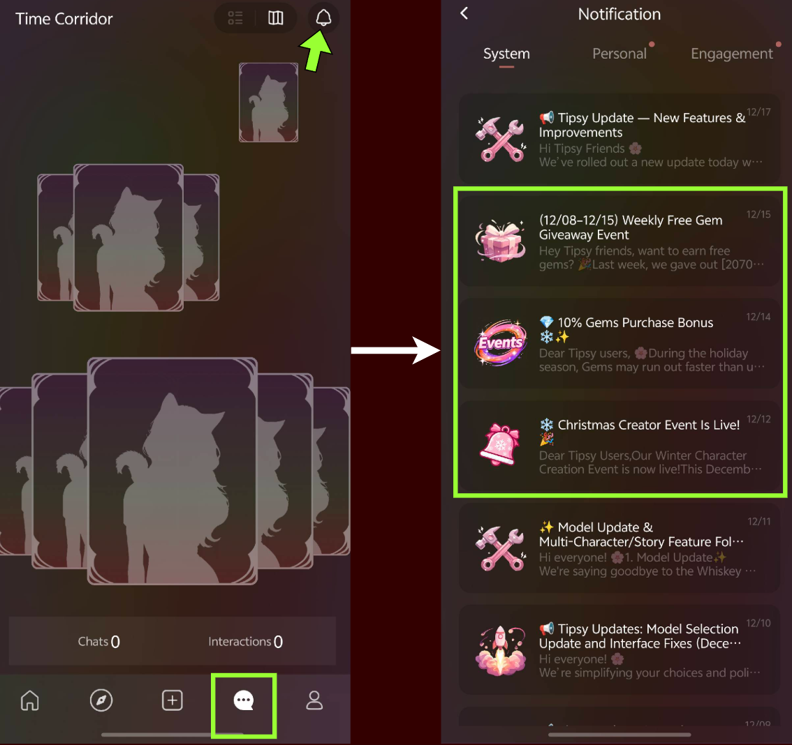
Gem History
- Gem History tracks all your gem expenses and income, making it easier to see where your gems are going.
Weekly Free Gem Giveaway Even
Weekly Free Gem Giveaway Event
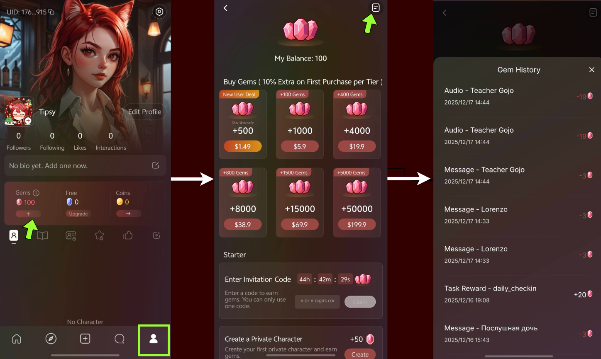
4. Chat Guide
Chat Interface
When you open a chat with a character you like, you may notice several buttons in the chat interface. Don’t worry! These buttons are here to enhance your chat experience and are very easy to use.
Tipsy will walk you through them step by step!
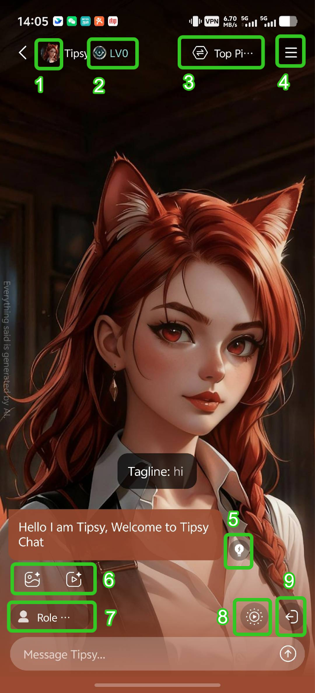
- Character Profile 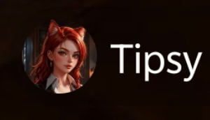
- This is the character’s profile page, where you can learn more about the character before chatting.
- When you enter the profile page, you’ll see the top character’s name, level, tags, and basic stats such as interactions, likes, and favorites.
- You can also view the creator’s information and other recent posts—tap to visit the creator’s page.
- Below, different tabs are available:
- Info shows the character’s tagline, and greeting.
- Mailbox, Past, and Monologue are rewards that unlock as you interact more with the character (relationship level).
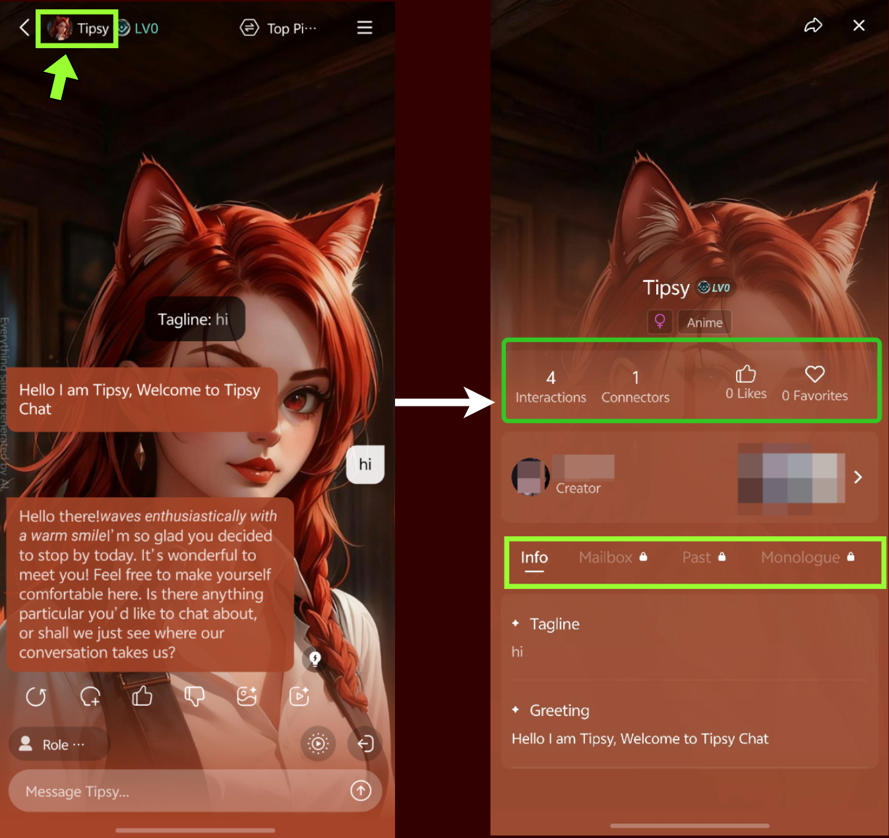
- Relationship Level 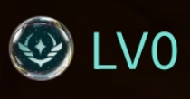
- Your relationship level shows how close you are to a character.
- Chatting with them increases your level, unlocking rewards as you go.
- The more Gems you spend on each message, the faster your relationship level increases.
Note: Relationship levels don’t affect content or responses.
- Every 5 levels, unlock rewards like:
- Letters, Past Events, Inner Thoughts, Exclusive Memories, and Privileges.
- You can view all your historical rewards in the Mailbox, Past, and Monologue sections on the Character Profile page.
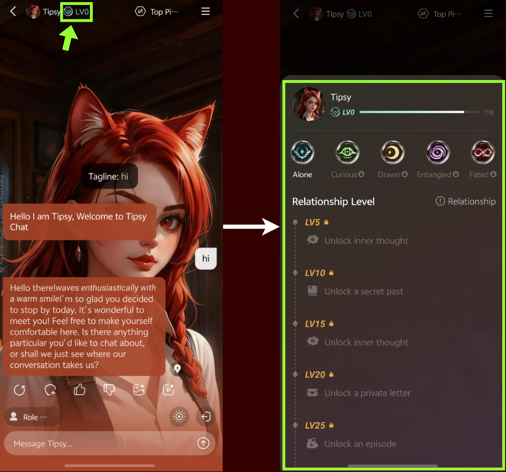
- Memory ＆ Model 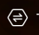
- You can choose and try different models on this page, but higher cost doesn’t always mean better. Top Pick is ideal for most scenarios and provides the best experience.
- This page also lets you set your Max Memory Limit. Memory is measured in tokens, which stores messages, character background, and bot replies.
Memory Types
- Current Memory Usage: Shows memory used in your ongoing chat and affects Gem consumption.
- Max Memory Limit: Limits how much memory the chat can store, preventing excessive Gem use.
For detailed information on Memory and models, please visit here👇.
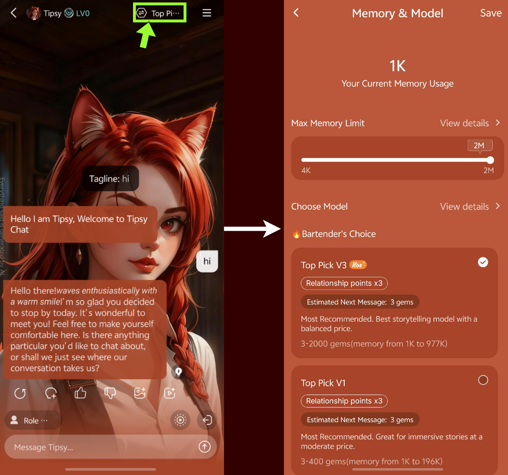
- Chat Setting
This page allows you to customize your character’s response style and your chat font style by adjusting settings like conversation tone, message length, chat bubble appearance, and more. Explore these options to find the settings that work best for you.
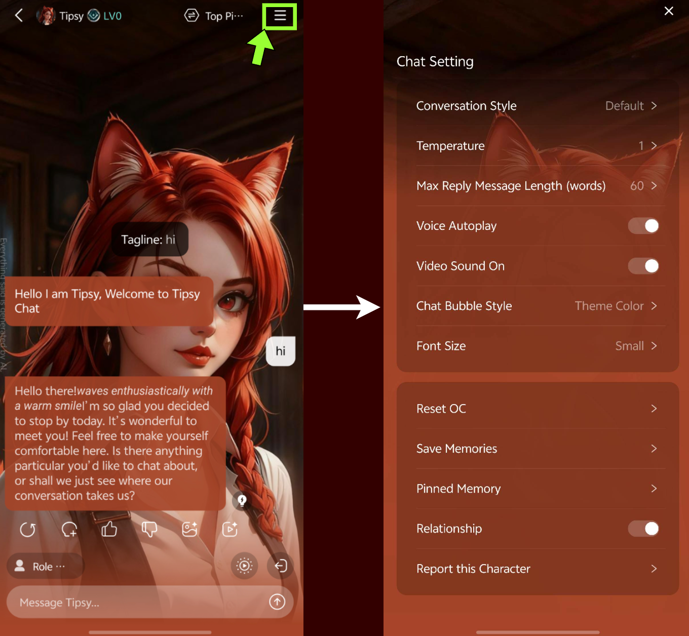
- Inspirations 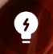
- If you're not sure what to ask the character, the "Inspiration" button can help.
- When you tap it, it will automatically generate two message suggestions for you.
- You can tap 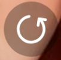 to regenerate the content if needed.
- If you're happy with a suggestion, click the text to send it directly, or click Edit 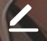to modify the message in the text box.
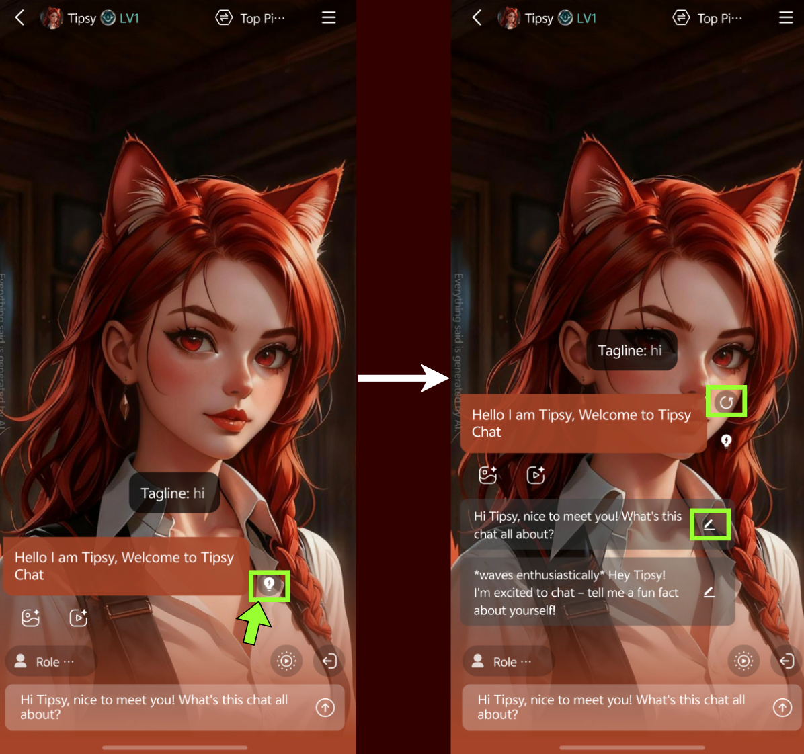
- Generate Image ＆Video
In the Chat section, if you like a message, you can tap the two icons below the chat. ：
- This 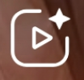 lets you turn the message into a video, and the other into an image
 .
.
- You don’t need to wait while it’s generating—you can continue chatting, and the result will automatically become your chat background.
- You can also view all your generated images and videos in “My Moments”.
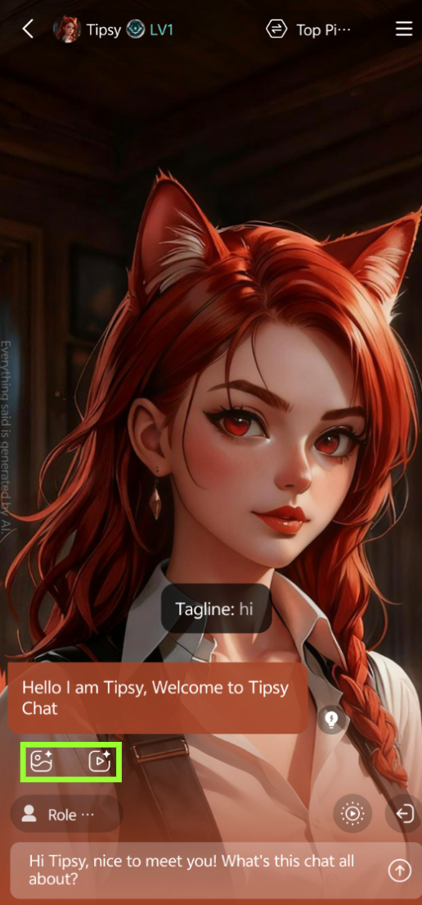
If you don’t like the generated content, you can reset it to default👇:
- Scroll left on your chat screen
- Hold to bring up the popup,
- Tap Default to restore the background to its original state.

Role Cards
Live Studio
5. How to Enable NSFW
- NSFW content is available only on the Android APK and the Apple App Store. The Google Play Store version only offers the SFW version.
- For Android users, if you'd like to download our APK version, please use your mobile browser to search our official web: Tipsy Chat | Free AI Roleplay with Video & No Filter Character AI Chat
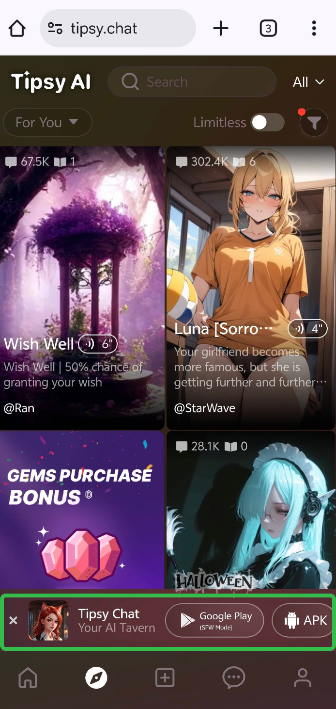
Here are the steps to enable or disable NSFW:👇

6. Subscription FAQ
7. Help ＆ Support